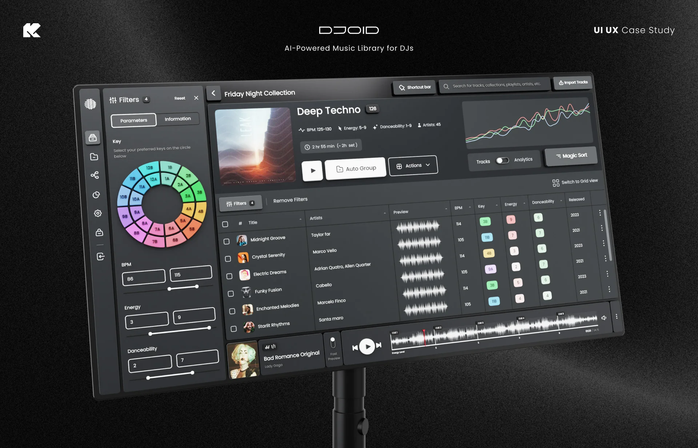
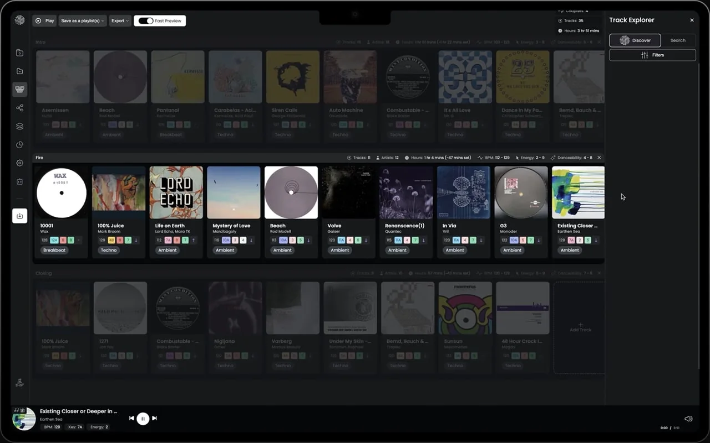
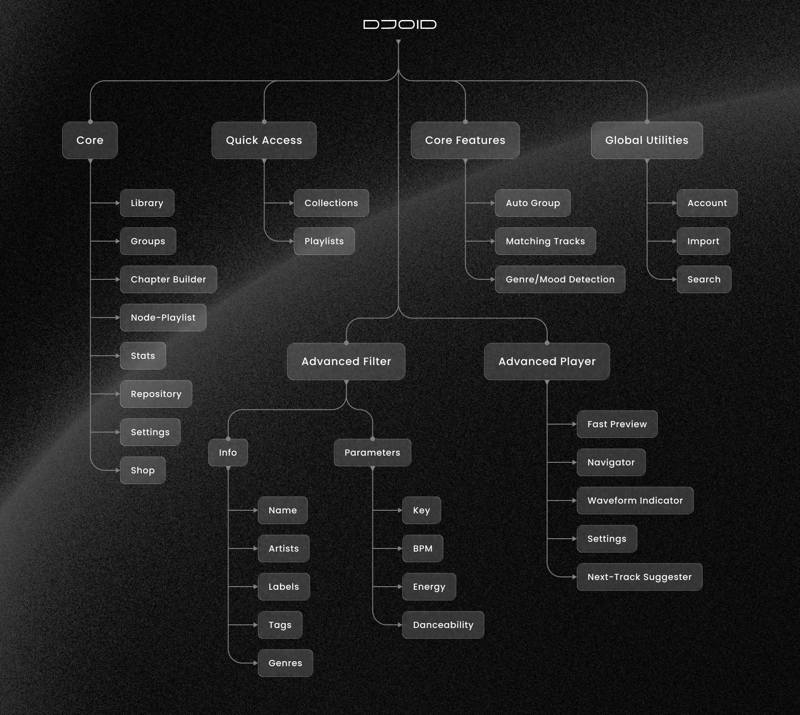
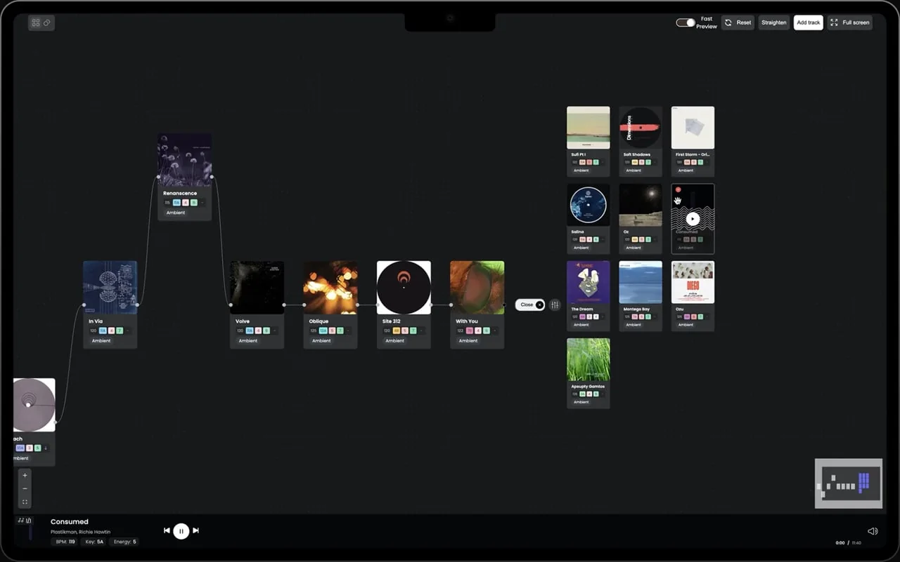
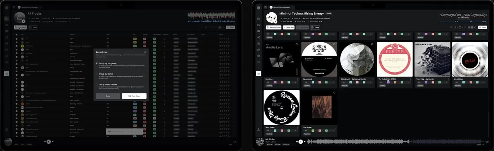
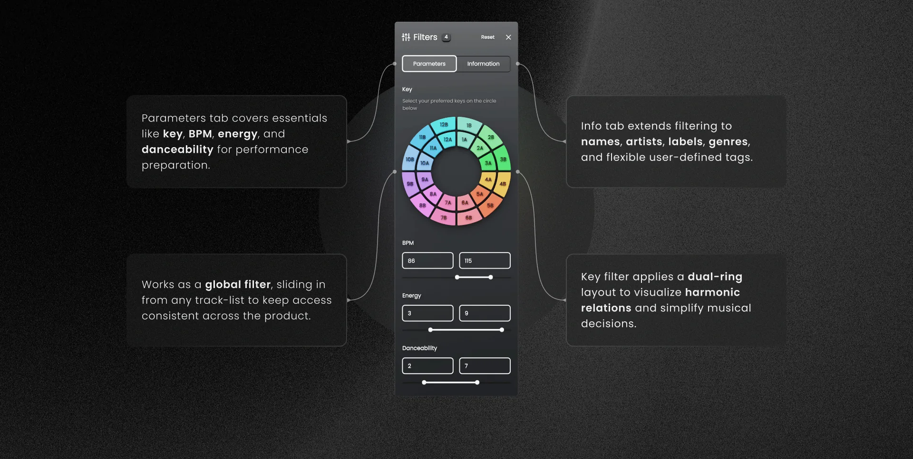
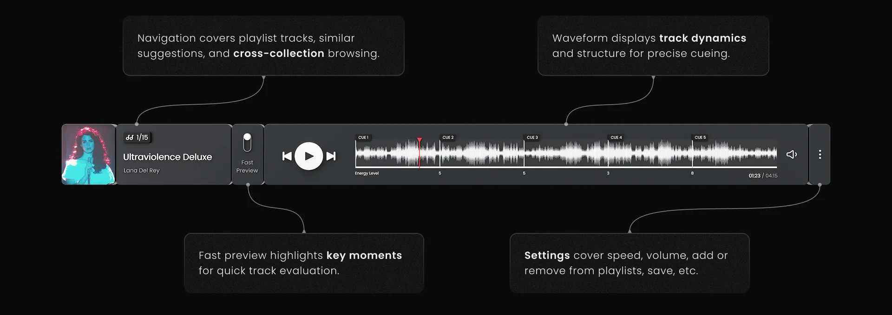
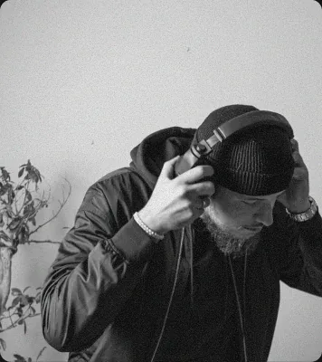
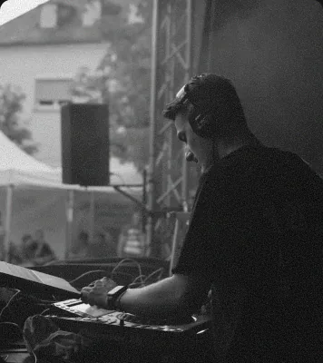
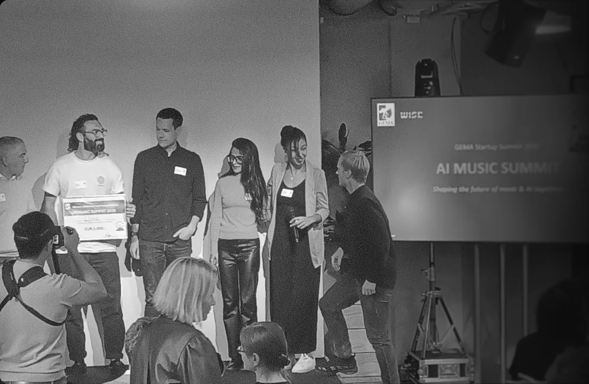

Djoid
AI-powered music library for DJs
- Role
- Product designer
- Users
- Club, festival & event DJs
- Published
- September 2025
- Recognition
- GEMA × WISE Startup Award 2025

Data to Rhythm
As digital music collections expanded, libraries became chaotic and unmanageable. Djoid emerged as an intelligent system, using AI to bring order, reveal hidden tracks, and shape collections into performance-ready journeys.
The challenge was clear: DJs faced fragmented libraries, unreliable tagging, and endless prep time. The problem wasn’t collecting music; it was transforming that chaos into a system that supports creativity and live performance.

Scalable architecture
Handling large-scale track libraries with efficient storage, indexing, and retrieval.
Intelligent algorithms
Applying AI models for detection, grouping, and recommendation across complex datasets.
Instant controls
Designing interfaces and flows optimized for speed, accuracy, and live performance use cases.
System reliability
Ensuring low-latency operations, stability under stress, and error-tolerant design.
Workflow Perspective
A holistic look at our workflow, covering challenge definition, research, ideation, prototyping, testing, and refinement through to post-launch insights.
Challenge definition
Framing the problem & project goals.
Research & analysis
- Competitive landscape
- Cross-domain inspiration
- Audience insights & personas
Information architecture
- Early structures
- Content flows
- System mapping
Ideation & sketches
Low-fidelity explorations of layout and interactions.
Prototyping
Progression from low → mid → high-fidelity UI.
Testing & iteration
Ongoing validation with users & internal feedback.
Launch & post-release insights
Data-driven refinements after real-world usage.
Continuous refinement
Ultimately iterative, looping back when needed.
Competitive Analysis
With only an early understanding of the challenges, we turned to existing solutions for perspective. Studying competitor tools not only revealed limitations, but also offered valuable insights that helped outline DJs’ needs and personas.
| Feature | algoriddim | Mixo | Producer AI |
|---|---|---|---|
| AI-powered curation, analysis | Automix AI, Neural Mix™ for stems and transitions | ||
| Bulk upload, library management | Cloud syncs, metadata editing, duplicates cleanup | ||
| Auto grouping, matching, graph | Track Match based on harmonic/tempo compatibility | ||
| Genre, mood detection | Generative composition only | ||
| In-dashboard track purchasing |
Alongside competitors, I explored unrelated products for inspiration. Looking beyond similar tools is part of my usual method, especially when few direct references exist.
Who We Designed For
We had long-standing ties with DJs, which we extended into online and in-person interviews. The following personas are fictionalized but reflect real insights.
The Veteran Club DJ
- +16 years experience
- Club & festival performer
- Age 28
- Berlin, Germany
- Full-time DJ
Library & context
+30,000 tracks across genres and eras. Residencies, festivals, late-night dance floors.
Workflow style
Preps crates but relies on graph views to uncover track flow.
Primary goal
Deliver high-energy sets with smooth flow while keeping the library manageable.
Creative needs
Tools that reveal unexpected connections between tracks to push creativity mid-set.
Tool expectations
- AI-powered suggestions
- Reliability under pressure
- Fast navigation in massive libraries
Pain points
- Too much time wasted digging
- Lost gems buried in the archive
- Stressful prep before big shows
The Collector Curator
- +10 years experience
- Events & private gigs
- Age 36
- Oslo, Norway
- Part-time DJ, radio host
Library & context
10k–15k tracks spanning many decades and genres. Corporate events, private parties, crowd-pleasing focus.
Workflow style
Prepares graph playlists to map energy progression; keeps backup crates for audience requests.
Primary goal
Deliver long, adaptable sets while managing diverse audience expectations.
Creative needs
Visualizing set progression to balance energy; surprise guests with smooth transitions.
Tool expectations
- Bulk upload
- Smart grouping to reduce prep time
- Mood/genre detection to shift across styles
Pain points
- Pressure of requests on the spot
- Difficulty maintaining flow across styles
- Time-consuming prep
Core IA Sitemap
As a pioneer in this industry, we were less bound by Jakob’s Law than products in crowded markets. This freedom let us explore innovation while shaping the information architecture.

The Node Zone
Where tracks connect
The challenge was to show how tracks connect through BPM, key, energy, and vibe. Inspired by Blender’s Geometry Nodes, I created a “node zone” where DJs map tracks like a mind map, dragging, linking, and reshaping playlists with ease.

Early tests showed the magic: instead of just curating lists, DJs were designing journeys. Hidden transitions surfaced, unexpected harmonies emerged, and sets began to flow like living stories.
Smart Blenders
Auto Group
The feature was designed to remove the burden of manual organization. By grouping tracks automatically, it keeps libraries structured and usable at scale.
Matching Tracks
The matching engine was crafted to align tracks by energy, BPM, key, harmony, danceability, and even era, making set preparation more intuitive and consistent.

Global Filter
The advanced filter unifies technical and contextual controls, from harmonic keys to custom tags, enabling faster navigation, smarter prep, and flexible workflows.

Advanced Player
The advanced player integrates navigation, previews, waveform view, and sound settings, improving track selection, mix adjustments, and playlist management.

What DJs Say
DJs shared their experiences with Djoid, highlighting how it helped them organize vast libraries, uncover insights, and focus more on creating unforgettable sets.

Djoid allows me to get to the essentials when preparing for a gig. The team is highly dedicated, and the software is top-notch. It’s a must-have tool for every DJ.
The Graph completely changed how I prepare for my sets. Instead of scrolling through endless track lists, I can now visualize my music, find connections between tracks, and build cohesive playlists faster than ever.

Thanks to Djoid, I’ve been able to create stunning sets with ease, while gaining a deeper understanding of my music library through its powerful analytics and statistics. It has truly elevated my DJ experience!

We won the GEMA × WISE Startup Competition Award 2025
Honored to have contributed as product designer to a platform that puts music curation at the heart of DJing. Big thanks to the team, the DJs who supported us during the iterations, and the community who made this possible.